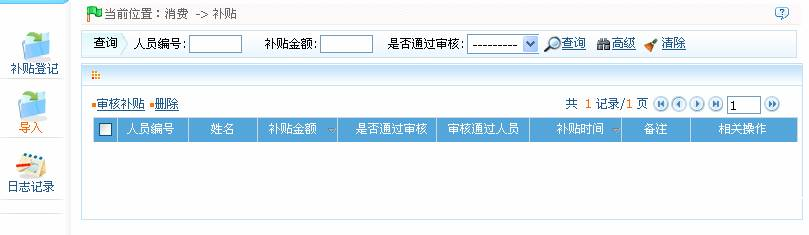
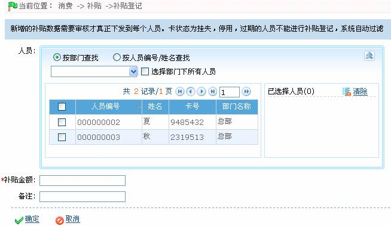
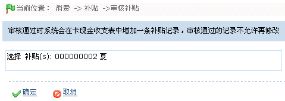
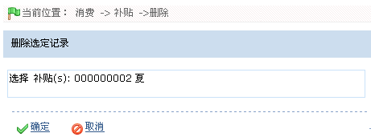

ID--8.3 补贴
单击【消费】 【补贴】，进入如下图所示补贴设置页面：
【补贴】，进入如下图所示补贴设置页面：

用户可以在该页面进行补贴登记、审核补贴和补贴编辑与删除等操作。
ID--8.3.1 补贴登记
 注意：新登记的补贴数据需要审核才真正下发到每个人员，审核补贴操作请参考ID--8.3.2 审核补贴。卡状态为挂失，停用，过期的人员不能进行补贴登记。
注意：新登记的补贴数据需要审核才真正下发到每个人员，审核补贴操作请参考ID--8.3.2 审核补贴。卡状态为挂失，停用，过期的人员不能进行补贴登记。
1、点击【消费】 【补贴】
【补贴】 【补贴登记】图标，进入补贴登记页面：
【补贴登记】图标，进入补贴登记页面：

选择需补贴的人员（人员的选择请参见附录1 常用操作中的1. 人员选择），并输入“补贴金额”。根据需要输入“备注”信息。
2、设置完成后，单击【确定】按钮保存，并返回补贴页面；此时补贴列表中将显示刚登记的补贴。
ID--8.3.2 审核补贴
 注意：补贴登记后，该补贴并未下发，只有当用户审核补贴通过后，方下发该补贴。审核通过后，系统自动将补贴金额加入补贴人员的卡余额中，此时补贴人员的卡余额=原余额+补贴金额。
注意：补贴登记后，该补贴并未下发，只有当用户审核补贴通过后，方下发该补贴。审核通过后，系统自动将补贴金额加入补贴人员的卡余额中，此时补贴人员的卡余额=原余额+补贴金额。
1、在“补贴”列表中，单击选中需审核的补贴，然后单击【审核补贴】按钮，进入“审核补贴”页面。

2、单击【确定】按钮，审核该补贴，并返回补贴页面；此时该补贴的“是否通过审核”列的值显示为“是”，即已通过审核。
ID--8.3.3 删除补贴
 注意：只有未通过审核的补贴记录（即“是否通过审核”为“否”的补贴），才能进行删除操作；否则不可删除。
注意：只有未通过审核的补贴记录（即“是否通过审核”为“否”的补贴），才能进行删除操作；否则不可删除。
1、在补贴列表中，单击选中需删除的补贴，然后单击【删除】按钮，进入删除补贴的确认页面：

2、单击【确定】按钮，删除被选定的补贴，并返回补贴页面；此时补贴列表中将不再显示该补贴。